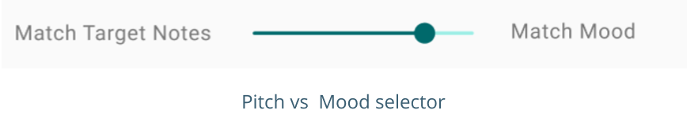
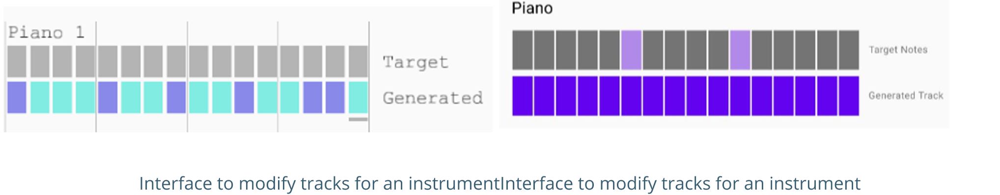
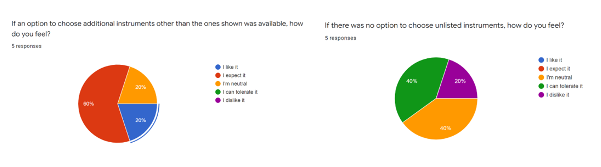

Testing our improvements
After the sprint, we split the team in half and got to work on the second iteration. Half the team worked on learning how to implement
the backend while my half of the team worked on updating the designs, and incorporating the feedback that we received.
The major change that we made was to remove the node map, which was a large point of confusion for many users,
we also simplified the mood control by making the user select only one mood for the whole track.
Finally we updated the instrument selection to be more clear, and pivoted the design so that a loopable track was created.
We also used this as a chance to develop the genetic algorithm component of it, and ensure that the developed prototype
and the figma prototype would be similar for our next round of testing.
We re-interviewed the same users again and then gave each user a questionnaire to fill out.
I then used the user research data we collected to outline 3 major problems with the systems.
When the target and mood scale is shifted users found that some values resulted in unexpected behaviour.
For small shifts towards either the target or mood ends of the spectrum, users did not notice identifiable changes
to the track being played. Additionally, I noted that on the extreme value of 100% target matching, the behaviour was not as expected.

Through a Kano Model test with 5 users. 1 out of 5 users was neutral with the statement “Various ratios of the "Fitness Weight"
slider worked for you and it was identifiable to notice the effects” while 2 users stated they somewhat agreed.
During the user interviews, these users stated that they primarily struggled with noticing changes at the extreme
value of 100% matching target notes. They stated that the expected result was a 100% match of the goal track and
were surprised to see that additional notes continued to be generated. Their assumption was that moving it to the
target extreme would give them manual control over the track. With the current algorithm, there is a mutation rate
that applies to all the values of the slider. A 0% mutation will result in the algorithm getting stuck on a value
that may not necessarily reflect the target, as a result a mutation rate is necessary for the regeneration of the track.
My Recommendation?
As the failure of the extreme values is not a failure of the genetic algorithm
I do not believe it is necessary to modify the genetic algorithm to reduce the mutation rate for the 100% target match
I do however recommend making it more clear to the user what the expected result could be.
The first action should be capping the percentage so that a value of 100% cannot be reached.
The expected result for this action would be that users will understand that 100% values are not possible and
will expect a slight mutation to their target track at the 99% value. The second recommended action is to
rename the slider to a more descriptive name and add helper text that explains the functionality of slider.
This follows the usability heuristic of error prevention
By doing a better job explaining the resulting consequence of an action, users will be able to form a more accurate mental
model of the system, and will form action plans that result in fewer mistakes.
The colours used in both the Figma prototype, as well as the Processing prototype resulted in
confusion during the user tests. Users found it unclear which colours corresponded to active actions
presented in the prototype, and which colours were default, inactive colours. Additionally, due to the
similar saturation levels, and low contrast ratios, there were accessibility issues that resulted in
colors not being clearly defined for users with color blindless.

Through a Kano Model test with 5 users. 2 out of 5 users somewhat disagreed with the statement
“The colors in the soundboard for target and generated track were easy to understand”
while 1 user stated they were neutral. During the user interviews, these users stated that they
had struggled to initially understand which notes were ‘On’ or ‘Off’ on the generated track. They
felt that both colors could indicate an ‘On’ state. One user elaborated that they chose “Somewhat Disagree”
rather than “Strongly Disagree” as the states became clear after observing the prototype for a few seconds.
They also stated that the ‘On’ and ‘Off’ states for the ‘Target’ track were clear. This protype was also
tested within our design team with a colour-blind member. They stated that they had a hard time differentiating between
the colors used in the generated track in the Processing prototype. Upon looking at the contrast ratios of these colors.
The purple and teal had a contrast ratio of 2.16:1 when compared with each other. A minimum contrast ration of 3:1 is
required for functional graphics
My Recommendation?
Based off the pain points discussed, I recommend re-skinning the prototypes
so that the colors are more accessible and easier to understand.
The most common criticism about the colors used was that the active and inactive states were unclear.
Following common design standards, I would suggest using colors with a lower saturation to indicate inactive states.
It should also be noted that for inactive graphics, there are no contrast ratio requirements.
This will allow users to build mental models consistent with other web apps.
I would also suggest using darker colors for the active states to increase the contrast
ratio from 2.16 to at least 3:1. The colors used should also try and be friendly for red-green color
blind users as it is the most common type of color-blindness . Finally, I recommend increasing the font size,
and using a darker shade of grey, as the current color does not pass the AA contrast test for both normal and large text.
Upon reaching the instrument selection page, users expected to be able to select instruments from a wider library than what they were shown.
Users that had tested the initial prototype, Prototype 1, had been given a recommended list of instruments, but also had the option to
search for more. They recalled this while testing Prototype 3 and excepted the same functionality.
Through our testing, 3 out of 5 users were returning testers who had previously tested Prototype 1. All 3 of these users had stated that they expected to be able to choose additional instruments. We then used the Kano-Model test to determine how users feel about the addition of this feature, and about the lack of this feature.

The results from this test primarily indicated that this would be a feature that brings
delight to the user or may be required. One user that we tested was a mobile developer and was also
our primary user for this product. He stated that he expected to be able to change instruments and
would have liked to see that functionality as sometimes game designers/ developers have certain
instruments they feel would fit with the mood of the game. He also stated that playing around with
various moods to see what instruments are recommended would be a hassle and waste time.
My Recommendation?
Using feedback from our primary user, I suggest allowing users to be able to select multiple instruments for their track,
by giving them access to the full instrument library. I also suggest having indicators
that show the user which instruments are recommended for the mood that they chose.
This will allow users to have the freedom to make their own choices without needing to restart the track process,
while also guiding them using researched recommendations for what instruments may work for their track.